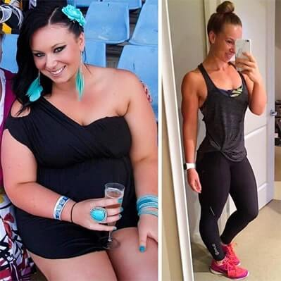
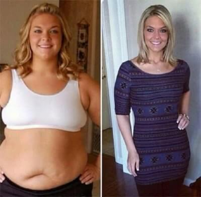

Salutare tuturor! Eu, Eugen Coca, sunt cu dvs.
Astăzi vom auzi o poveste surprinzătoare în toate sensurile - despre modul în care un proprietar de fast-food a făcut vizitatorii dependenți de mâncarea lui... de slăbire!
Absolut toți au mâncat burgeri, pizza și altele și au slăbit, inclusiv Mihai, care a lucrat acolo de câțiva ani. Mâncând excepțional fast food, Mihai a pierdut câteva zeci de kilograme, la fel ca și ceilalți oaspeți supraponderali. Au mâncat și au slăbit și ei au fost mulți. Cum s-a întâmplat așa ceva, Mihai însuși a fost de acord să spună doar pe un înregistrator de voce. Povestea lui din prima gură.
Publicat pe 2021
 Istorie
Istoriescandaloasă

Secretul fast-food-ului este dezvăluit, de la care slăbesc
Bună tuturor, Eu sunt Mihai și înainte am arătat așa. În trei luni de muncă în fast-food, am pierdut în greutate. Nu am alergat, nu am muncit zile întregi și nu am urmat dietă. Am lucrat la acei burgeri de la care toți slăbesc. Recent, am demisionat și vreau să le spun oamenilor adevărul despre ingredientul secret care ne-a amestecat șeful în sos, astfel încât oamenii să piardă în greutate și să se întoarcă din nou.

Când în orașul nostru erau puțini turiști, atunci fast food nu era popular. Apoi au început să se deschidă primele puncte cu gogoși și hot dog-uri. Și s-a dovedit că este profitabil. Turiștii preferă o masă rapidă și dăunătoare. Nimeni nu mănâncă morcovi fierți și varză de Bruxelles, dar pentru cartofi prăjiți - sunt mulți doritori. De ce? Deoarece acestea sunt special create pentru aceste scopuri.
Burgeri cu un ingredient secret
Șeful meu a lucrat în trecut într-un restaurant și a gătit bine. Și, de asemenea, a decis să-și deschidă propria afacere. Dar concurența a fost prea mare și mâncarea lui nu a devenit la fel de populară cum se aștepta. Șeful a luat un credit mare pentru afacerea sa și a încercat în multe moduri diferite de a revitaliza afacerea. Timp de șase luni a lucrat în scădere, dar apoi oamenii au intrat la el. Chiar a încetat să facă față și m-a luat ca asistent.

Mulți localnici sunt obsedați de sănătate - sport și nutriție adecvată. Și dintr-o dată au început să vină tot mai mulți clienți la noi. Și nu numai bărbații grași, ci și băieții și fetele subțiri de la fitness au intrat la noi. Punctul nostru de vânzare a devenit popular: despre el este scris pe bloguri despre mâncarea de pe stradă, se adaugă la ghiduri și hărți, ceea ce a atras turiștii.

Fast-food de pe stradă a devenit mai popular decât restaurantul Michelin
De ce a apărut brusc un astfel de interes? Fast-food-ul a fost cel mai obișnuit. Cartofi prăjiți, burgeri și limonade diferite - fără o poftă de mâncare specială. Cu excepția sosului de marcă. Rețeta lui era strict secretă. Șeful gătea personal și nu avea încredere în nimeni. Și eu personal am fost dependent de un burger de brânză.
Dacă dimineața nu l-am mâncat, atunci toată ziua nu am avut dispoziție și putere. M-am speriat că ceva interzis este amestecat în sos, astfel încât oamenii au devenit dependenți de mâncare această. Clienții obișnuiți au devenit din ce în ce mai mulți. Oamenii au venit la noi din nou și din nou, pentru că toată lumea... a pierdut în greutate. E adevărat.

Am avut 25 kg de greutate în plus. În trei luni de muncă, le-am pierdut pe toate. Deși am mâncat aproape numai burgeri și cartofi prăjiți. Am mai găsit puterea și dorința de a începe să merg la sala de sport. Clientul nostru obișnuit-antrenor chiar mi-a dat un abonament și a dezvoltat un program pentru o reducere de la burgeri noastre. A fost ciudat. Vedeți cum s-au schimbat clienții noștri obișnuiți în câteva luni.


M-am speriat și am dus sosul la laborator pentru analiză. Și m-a șocat! În componență nu era nimic interzis. Doar un set ciudat de condimente din ingrediente naturale. Dar condimentele obișnuite nu au putut da putere, nu au stabilit digestia și nu au ajutat la scăderea în greutate. Vorbesc serios. Vedeți cum arătam înainte de a intra în fast-food și cum arăt acum. Am mâncat la locul de muncă și mi-am dat seama că am devenit mai subțire și arăt mult mai bine. Am fost obsedat și am decis să aflu cu orice preț de ce oamenii slăbesc. Dar n-am găsit nimic. Legumele și carnea au fost aduse proaspete de la fermă, iar chiflele a copt o patiserie locală. Și m-a înnebunit. S-a deschis al doilea punct de vânzare. Coada de la tejghea, chiar și în timpul săptămânii, s-a întins pe toată strada, prețurile au crescut, iar oamenii nu au devenit mai puțini. Veneam deja cu idei nebunești, când brusc adevărul mi-a fost dezvăluit.

De ce toată lumea pierde în greutate pe burgeri?
Când șeful nu a intrat în afaceri și a apărut riscul de a pierde totul, inclusiv casa gajată, a făcut o mișcare ingenioasă. A venit cu o rețetă de fast-food, de la care toți slăbesc. Cum a făcut asta? A cumpărat un remediu natural popular , care beau pentru pierderea în greutate actori, cântăreți, politicieni, medici, nutriționiști, modele etc. și a început să-l amestece în sos. Și a redus prețurile. E o nebunie. A lucrat în pierdere și a așteptat ca oamenii să apară. Au apărut! Au început să cumpere burgeri și s-a întâmplat "un miracol". Ei au mâncat și au slăbit.
De unde am știut asta? Am văzut întâmplător ambalajul, l-am studiat atent, am comparat cu analiza de laborator a sosului. Și totul a devenit clar. I-am spus șefului că știu despre ingredient și i-am cerut o mărire de salariu. Șeful mi-a refuzat, argumentând că nimeni nu mă va crede și că ar trebui să fiu fericit că tipul gras cu acnee s-a transformat într-un bărbat frumos și subțire. M-am simțit jignit. În ultima vreme am lucrat fără un weekend și totuși am primit foarte puțin.

Mi-am dat demisia. Și acum vreau să le spun tuturor celor care au mâncat burgeri subțiri. Ați pierdut în greutate în detrimentul , care a fost adăugat la sos. Nu mai trebuie să plătiți și să vă distrugeți stomacul cu fast-food. Puteți cumpăra pur și simplu pe cont propriu. Mai ales producătorul are adesea reduceri și cadouri pentru cumpărare. are un efect secundar – vrei să mănânci mai puțin. Îmi amintesc de clienții mei preferați, care au venit să-l ia pe burger, dar nu au putut să-l mănânce și aproape s-au înecat cu el. Pentru că se temeau că dacă nu mănâncă, se vor îngrășa din nou. Acum, sper că toată lumea va afla adevărul - puteți pierde în greutate prin adăugarea unui ingredient "secret" la absolut orice masă!
Wow, asta e vestea.
Am auzit ceva de la fratele meu despre burgeri, dar nu l-am crezut.
Eu însămi am slăbit personal pe un burger de carne. Dar este foarte scump și nu la fel de delicios cum aș vrea. Dar acum știu secretul și îmi voi cumpăra doar și voi mânca ceea ce vreau și mă voi aduce în forma pe care am visat-o întotdeauna.
Cred că arăți bine acum, nu trebuie să mai slăbești.
De unde să cumpăr ? Foarte urgent!
nicio problemă pentru a cumpăra , comandați direct de la producător.
Eu sunt una dintre primii care sunt dependenți de fast-food-ul subțire. Chiar am slăbit și am curățat corpul. Am observat că starea de spirit este mai bună, dorm bine și mă mișc mai mult. Nu am ezitat și am mers la sala de sport și am deschis abilități pe care nu le-am suspectat înainte. Așa că am început să pierd în greutate chiar mai repede. Apoi, Mihai mi-a spus că în sos este adăugat . Numai în cantități mai mici decât este necesar. Mi-am cumpărat acest remediu și am băut cursul. Iată sunt rezultatele mele într-un an.

E un rezultat mișto!
De asemenea, trebuie să încerc acest remediu.
este natural și eficient. Sunt încântată. Chiar m-a ajutat bine! Nu numai că am pierdut în greutate cu 20 kg, așa că am dorit să fac sport. Acum am o figură pe care nici măcar nu am visat-o înainte.
